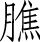
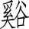

黄帝问曰：天有八风，经有五风，何谓？岐伯对曰：八风发邪，以为经风，触五臟，邪气发病。东风生于春，病在肝，俞（sh$）在颈项。南风生于夏，病在心，俞在胸胁。西风生于秋，病在肺，俞在肩背。北风生于冬，病在肾，俞在腰股。中央为土，病在脾，俞在脊。
故春气者，病在头。夏气者，病在臟。秋气者，病在肩背。冬气者，病在四肢。故春善病鼽（qi%）衄（n_），仲夏善病胸胁，长夏善病洞泄寒中，秋善病风疟，冬善病痹（b#）厥（ju9）。
故冬不按跷（qi`o），春不鼽衄。春不病颈项，仲夏不病胸胁，长夏不病洞泄寒中，秋不病风疟，冬不病痹厥。飧泄而汗出也。
夫精者，身之本也。故藏于精者，春不病温。夏暑汗不出者，秋成风疟。此平人脉法也。
故曰：阴中有阴，阳中有阳。平旦至日中，天之阳，阳中之阳也；日中至黄昏，天之阳，阳中之阴也；合夜至鸡鸣，天之阴，阴中之阴也；鸡鸣至平旦，天之阴，阴中之阳也。故人亦应之。
夫言人之阴阳，则外为阳，内为阴。言人身之阴阳，则背为阳，腹为阴。言人身之臟腑中阴阳，则臟者为阴，腑者为阳。肝、心、脾、肺、肾五臟皆为阴。胆、胃、大肠、小肠、膀胱、三 
帝曰：五臟应四时，各有收受乎？
岐伯曰：有。东方青色，入通于肝，开窍于目，藏精于肝。其病发惊骇。其味酸，其类草木。其畜鸡。其榖麦。其应四时，上为岁星。是以春气在头也。其音角。其数八。是以知病之在筋也。其臭臊。
南方赤色，入通于心，开窍于耳，藏精于心。故病在五臟。其味苦，其类火。其畜羊。其榖（g^）黍（sh^）。其应四时，上为荧惑星。是以知病之在脉也。其音徵。其数七。其臭焦。
中央黄色，入通于脾，开窍于口，藏精于脾，故病在舌本。其味甘，其类土。其畜牛。其榖稷（j#）。其应四时，上为镇星。是以知病之在肉也。其音宫。其数五。其臭香。
西方白色，入通于肺，开窍于鼻，藏精于肺。故病在背。其味辛，其类金。其畜马。其榖稻。其应四时，上为太白星。是以知病之在皮毛也。其音商。其数九。其臭腥。
北方黑色，入通于肾，开窍于二阴，藏精于肾。故病在 
故善为脉者，谨察五臟六腑，一逆一从，阴阳表里，雌雄之纪，藏之心意，合心于精。非其人勿教，非其真勿授，是谓得道。